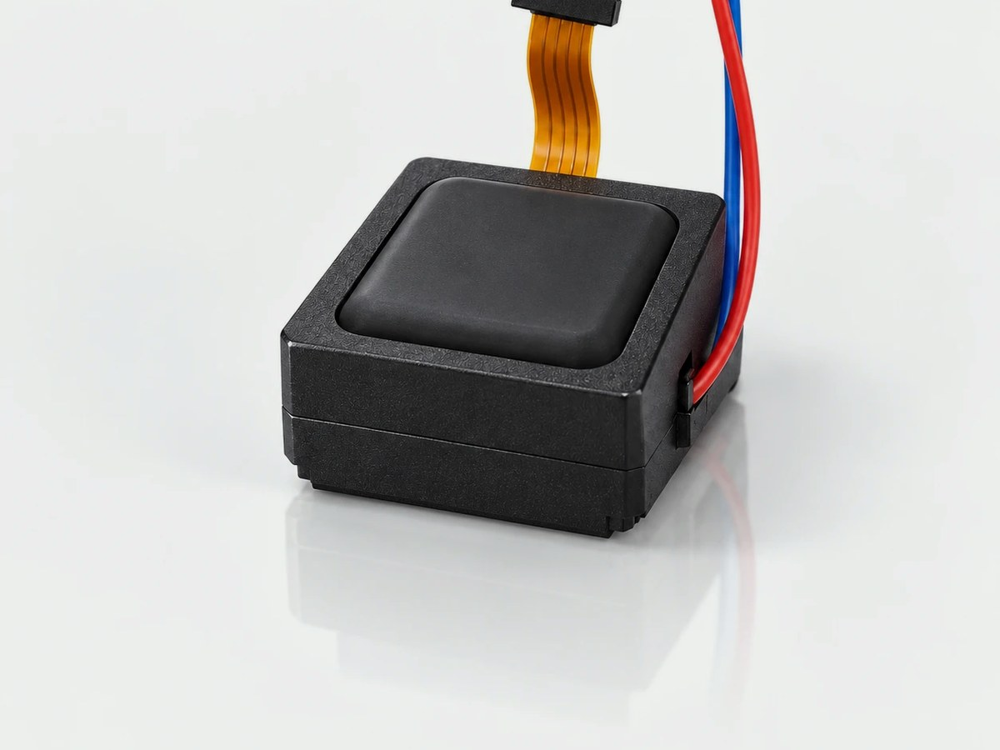
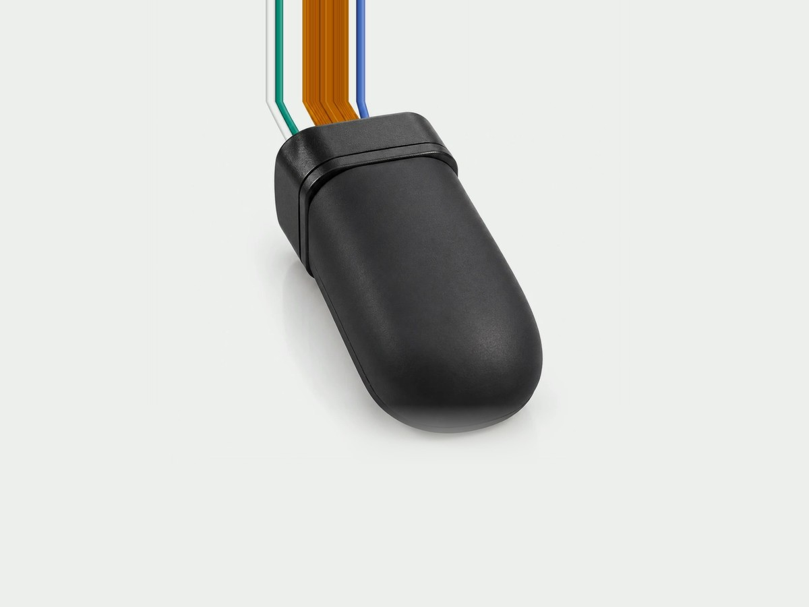
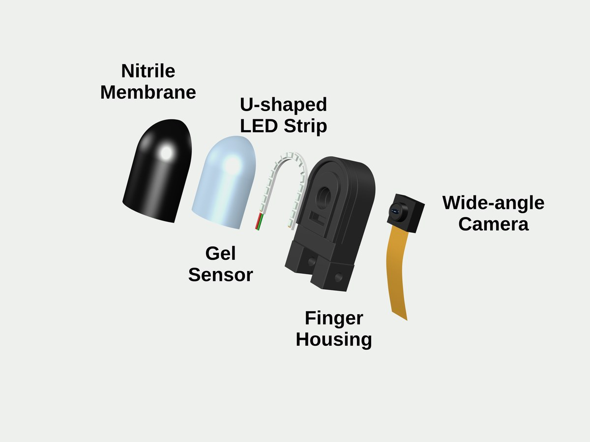
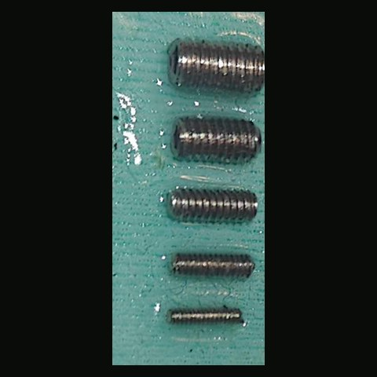
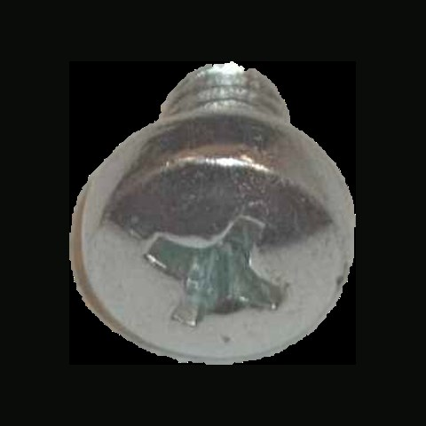
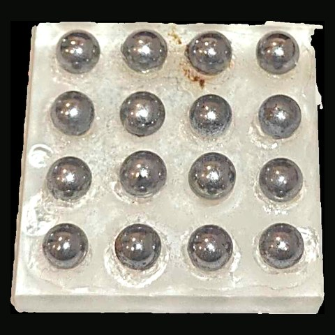
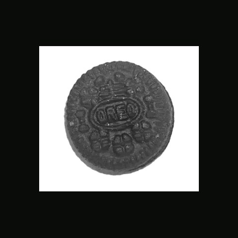
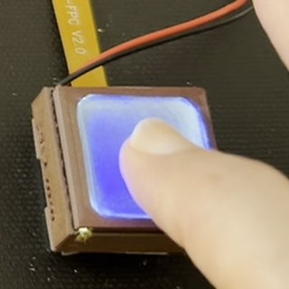
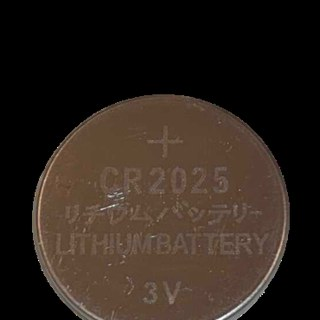
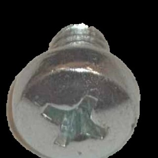

GlowTact
Simple and Compact Vision-Based Tactile Sensing with High Sensitivity and Spatial Resolution
Massachusetts Institute of Technology and Harvard University. *Equal contribution.

How it works
Move the slider to press. As the air gap closes, the membrane couples to the gel and the contact turns dark in the camera image.
Asperity coupling
HEIGHT EXAGGERATED
A fixed oblique projection shows contact islands expanding across the P2500-inspired surface.
Coupled area
Camera response
Why it’s simple
- Single-color light
- One LED color, no RGB channels.
- Monochrome camera
- Greyscale images, no photometric stereo.
- No coatings
- Just the gel and the membrane: no markers, no calibration.
- Durable membrane
- Medical-grade nitrile, which resists wear and chemicals.
Three form factors
All three use the same pressure-induced coupling.

 , full size (opens in a new tab)
, full size (opens in a new tab)
Flat sensor

 , full size (opens in a new tab)
, full size (opens in a new tab)
Omnidirectional fingertip


, full size (opens in a new tab)Humanoid fingertip
What GlowTact measures
A 0.2 g screw shows under its own weight
- Passive contact
- An M&M (1.0 g, 9.8 mN) and an M2 screw (0.2 g, 1.96 mN), set on the flat sensor with no added load.
- Controlled threshold
- 120 mN median minimum detectable force at SNR = 3, across 10 probes.
Fine contact geometry down to M1 threads
The relief, computed from the darkening, resolves the 0.25 mm thread pitch.

 M3 to M1 screw threads
M3 to M1 screw threads

 Phillips screw head
Phillips screw head

 4.7 mm calibration balls
4.7 mm calibration balls

 Oreo embossing
Oreo embossing
Shear from the gel’s own speckle
The tracked field is usable over 97.8 % of the sensing surface.

Fingertip, 6.1 s Pressed and dragged across the sensor
Coin cell, 8.9 s Its edge pressed in, then slid
M5 Phillips head, 13.6 s The cross recess under a sideways loadStraight from the camera
The unprocessed feed, shown on a tablet: a fingertip, then a coin pressed through denim.